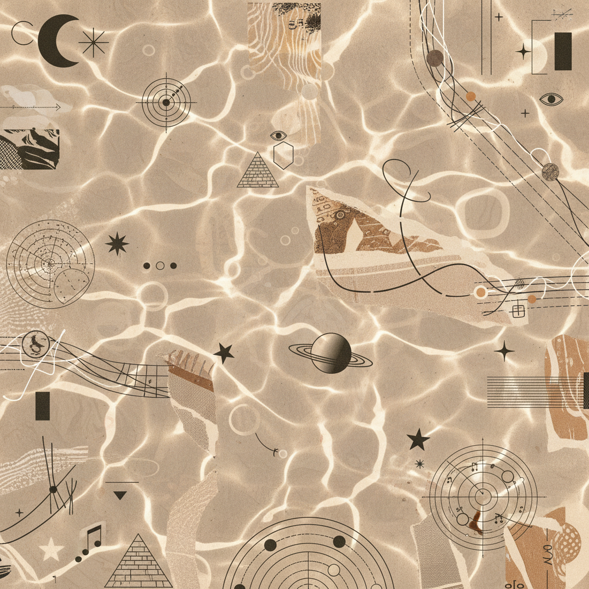

Pr-01
Crown Breathing
Direct the inhalation to the apex of the skull. Visualize the breath as a silver filament entering the fontanelle. Hold for a count of four, allowing the pressure to equalize the intracranial fluid.
- Tempo: 4-4-8
- Posture: Vertical spine
- Focus: Pituitary gland